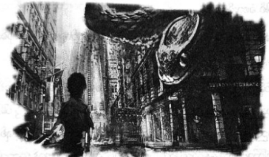

သူခိုးပေးသော အကူအညီ
မြင်းပျံစီးကာ ပျက်ကျနေသော ရဟတ်ယာဉ်နောက် လိုက်ရသည်မှာ လုံးဝ ပျော်စရာ မကောင်းဟု ပါစီ ထင်သည်။ ဂီဒိုသာ ကျွမ်းကျင်လွန်းသော မြင်းပျံမဟုတ် ပါက ပါစီတို့ ပါးပါး လှီးခံရပြီး ဖြစ်ပေလိမ့်မည်။
ရဟတ်ယာဉ်ထဲမှ ရေချယ်လ်၏အော်သံကို ပါစီ ကြားနေရပြီး သူမ အိပ်ပျော် မသွားကြောင်း တွေ့ရ၏။ သို့သော် ရဟတ်ယာဉ်မောင်းသူမှာ ခေါင်းငိုက်စိုက် ကျကာ အိပ်ပျော်နေပြီး ရဟတ်ယာဉ်မှာ အဆောက်အအုံများနှင့် ဝင်တိုက်ရန် တဖြည်း ဖြည်း နီးလာနေသည်။
“ဘယ်လိုလုပ်မလဲ …”
အန်နာဘတ်ကို ပါစီ မေးလိုက်သည်။
“ဟိုင်းယား …”
အဖြေကို အန်နာဘတ်က ဂီဒိုအား ဒိုင်ဗင်ထိုးချစေခြင်းဖြင့် ပေးလိုက်၏။
“ငုံ့”
ရဟတ်ယာဉ်ပန်ကာနှင့် ကပ်ကာ ဖြတ်ပျံမိသဖြင့် ဆံပင်များ လွင့်သွားသည်ကိုပင် ပါစီ ခံစားမိသည်။
ရဟတ်ယာဉ်ဘေး ရောက်သည်နှင့် အန်နာဘတ်က တံခါးကို လှမ်းဆွဲထားလိုက်သည်။
ထိုအခိုက်မှာပင် အားလုံး တလွဲဖြစ်ကုန်၏။ ဂီဒို၏ တောင်ပံတစ်ဖက်မှာ ရဟတ်ယာဉ်နှင့် ဆောင့်မိသွားပြီး မြေပေါ် ထိုးကျသွားကာ ကျောပေါ်၌ ပါစီ ပါသွားတော့သည်။ အန်နာဘတ်မှာ ရဟတ်ယာဉ်တံခါးကို ဆွဲရင်း တွဲလဲခို ကျန်ရစ်ခဲ့သည်။ အလွန်ကြောက်လန့်နေသည့် ကြားမှပင် ရဟတ်ယာဉ်ထဲသို့ အန်နာဘတ်ကို ရေချယ်လ် ဆွဲသွင်း လိုက်သည်ကို ပါစီ မြင်လိုက်ရသည်။
“သတိထား …”
ဂီဒို့ကို ပါစီ အော်ဟစ် သတိပေးလိုက်သည်။
“တောင်ပံကျိုးပြီ ထင်တယ်”
“ကြိုးစားလိုက် …”
ဆီလီနာ သင်ပေးသော မြင်းပျံသင်တန်းချိန်မှ စကားများကို ကမန်းကတန်း ပြန်စဉ်းစားလိုက်သည်။
“တောင်ပံကို ဖြန့်လိုက် … အသာလေး လေဟုန်စီးပြီး ဆင်းရအောင်”
ကျောက်ခဲတစ်လုံးလို ပြုတ်ကျနေရာမှ နောက်ဆုံးအချိန်လေးတွင် ဂီဒို တောင်ပံကို ဖြန့်လိုက်နိုင်သည်။ မျက်လုံး ပြူးကာ ပါးစပ်အဟောင်းသားဖြင့် မော့ကြည့်နေသော ဆင်းတောများကို မြင်ရသည်။ အရှိန်သတ်နိုင်သွားပြီး ပေငါးဆယ် မျှ လေဟုန်စီးကာ ပလက်ဖောင်းပေါ်ကျွမ်းပစ်ကျသွားကြသည်။ ပါစီက အောက်ဘက် မြင်းပျံက အပေါ်ဘက်တွင် နေရာ ယူကာ အပုံလိုက် မှောက်နေကြ၏။
“အား … ငါ့ခြေထောက် ၊ ငါ့ခေါင်း၊ ငါ့တောင်ပံ”
ဂီဒို အော်ဟစ် ညည်းညူနေ၏။ အရေးပေါ်ဆေးအိတ်နှင့် ခိုင်ရွန် ဒုန်းစိုင်း ရောက်လာပြီး မြင်းပျံကို စတင် ကုသတော့သည်။
ပါစီ ပြန်ထနိုင်ပြီး မော့ကြည့်လိုက်ချိန်တွင် အသက်ရှူပင် မှားသွားရသည်။ ရဟတ်ယာဉ်မှာ စက္ကန့်ပိုင်းအတွင်း အဆောက်အအုံများနှင့် တိုက်မိပေတော့မည်။ သို့သော် ကံကောင်းစွာဖြင့် ရဟတ်ယာဉ်မှာ ပုံမှန်ပြန်ဖြစ်သွားပြီး အောက်သို့ ဖြည်းဖြည်းချင်း ဆင်းသက်လာခဲ့သည်။
တစ်ကမ္ဘာခန့် ကြာသည်ဟု ထင်ရသော်လည်း နောက်ဆုံးတွင် ရဟတ်ယာဉ်မှာ မြေပြင်သို့ အန္တရာယ်ကင်းကင်း ဆင်းသက်နိုင်ခဲ့သည်။ အတွင်းသို့ ကြည့်မိလျှင် ရဟတ်ယာဉ်မောင်းသူမှာ အန်နာဘတ် ဖြစ်နေ၏။ သူ့မျက်စိသူပင် ပါစီ မယုံနိုင်။ ရဟတ်ယာဉ် မရပ်ခင်မှာပင် အနားသို့ ပါစီ ရောက်သွားခဲ့ပြီး ရေချယ်လ်က ဘေးဘက်တံခါးကို ဖွင့်ကာ ရဟတ်ယာဉ်မှူးကို ဆွဲထုတ်လိုက်သည်။
ရေချယ်လ်မှာ အပန်းဖြေခရီးသွားနေဆဲ ပုံမျိုး ဝတ်ထားပြီး တီရှပ်၊ ဘောင်းဘီတို၊ ညှပ်ဖိနပ်နှင့် ဖြစ်သည်။ ဆံပင်များ ရှုပ်ပွနေပြီး ရဟတ်ယာဉ် သေသေချာချာ စီးခဲ့ရသဖြင့် မျက်နှာတစ်ခုလုံး စိမ်းပြာရောင်သမ်းနေ၏။ နောက်ဆုံးမှ ရဟတ်ယာဉ် ထဲက အန်နာဘတ်ဆင်းလာသည်။ သူမကို တအံ့တဩပင် ပါစီ ငေးကြည့်နေမိ၏။
“နင် ရဟတ်ယာဉ် မောင်းတတ်တာ ငါ မသိရပါလား …”
“အေး … ငါလည်း မသိဘူး … ငါ့အဖေက လေယာဉ်မောင်းတာ ရူးသွပ်တဲ့သူ … ဒေးဒဲလ်လပ်စ် ချန်ခဲ့တဲ့ ပျံသန်းနိုင်တဲ့ စက်တွေ မောင်းနည်း ဖတ်ဖူးတယ် … အဲဒါနဲ့ အကောင်းဆုံး ခန့်မှန်းကြည့်လိုက်တာ”
“ငါ့အသက်ကို နင် ကယ်လိုက်တာပဲ …”
ရေချယ်လ်က ပြောလိုက်သည်။ ဒဏ်ရာရထားသော ပခုံးကို လှုပ်ကြည့်နေရင်းမှ အန်နာဘတ် ပြန်ပြောသည်။
“အင်း … အမြဲတမ်း အကျင့်မဖြစ်စေနဲ့ … နင် ဒီကို ဘာလာလုပ်တာလဲ ဒါရီ … စစ်ပွဲထဲကို ရဟတ်ယာဉ်နဲ့ ဝင်လာ စရာလား”
ပါစီ့ကို တစ်ချက်ကြည့်ရင်း ရေချယ်လ် ဖြေလိုက်သည်။
“ငါ … ငါ … ဒီကိုလာမှ ဖြစ်မယ် … ပါစီ ပြဿနာတက်နေတာ ငါ သိတယ်”
“အဲဒါအမှန်ပဲ … ကဲ … ဒဏ်ရာရထားတဲ့ သူငယ်ချင်းတွေကို သွားကူညီဦးမယ် … နင်အလည်လာတာ ဝမ်းသာ ပါတယ် ရေချယ်လ်”
“အန်နာဘတ် ……”
ပါစီ လှမ်းခေါ်သော်လည်း အန်နာဘတ်မှာ ခြေသံပြင်းပြင်းနှင့် ထွက်ခွာသွားပြီ ဖြစ်သည်။ နေရာတွင် ထိုင်ချရင်း ခေါင်းကို လက်ဖြင့် ရေချယ်လ် အုပ်ထားလိုက်သည်။
“ငါ တောင်းပန်ပါတယ် ပါစီ … ဒီလိုဖြစ်ဖို့ ရည်ရွယ်တာ မဟုတ်ပါဘူး … ငါ လုပ်တာနဲ့ အားလုံး ပိုရှုပ်ကုန်ပြီ …”
ဘာပြန်ပြောရမှန်း မသိသော်လည်း ရေချယ်လ် အန္တရာယ်ကင်းသည်ကပင် ဝမ်းသာစရာဖြစ်၏။ အန်နာဘတ်ကို လှမ်းကြည့်သော်လည်း လူအုပ်ကြားထဲတွင် ပျောက်သွားပြီ ဖြစ်သည်။ ရေချယ်လ့်ကို ကယ်ပြီးနောက် ရဟတ်ယာဉ်ကို ဆင်းသက်ခဲ့ကာ ဘာမှမဖြစ်သလို ထွက်သွားသော အန်နာဘတ်ကို ပါစီ နားမလည်နိုင်။
“ဘာမှမဖြစ်ဘူး … ရတယ် … နေပါဦး … နင်က ငါ့ကို ဘာပြောချင်နေတာလဲ”
“နင် ဘယ်လိုလုပ် သိတာလဲ …”
“အိပ်မက် မက်တာ …”
ထိုစကားကို ကြားရ၍ ရေချယ်လ် အံ့ဩသွားဟန် မရှိ။
“ငါ မြင်နေတာတွေ များပြီ … မြူကို ဖောက်ပြီး မြင်ရတဲ့ပုံစံမျိုးကို ပြောတာ မဟုတ်ဘူး … အခုမြင်တာက တစ်မျိုး … ပုံတွေ ဆွဲမိတယ် … စာတွေ ရေးမိတယ်”
“ရှေးဟောင်းဂရိစာနဲ့ ရေးတာ မဟုတ်လား … ဘာအဓိပ္ပာယ်လဲ နင် သိသလား …”
“အဲဒါကို နင်နဲ့ စကားပြောချင်တာပဲ … နင်သာ ငါနဲ့အတူတူ ခရီးသွားဖြစ်ရင် ဘာလဲဆိုတာ ကူတွေးပေးနိုင်မယ် လို့ ထင်တာ …”
ပါစီ့ကို ရေချယ်လ် တောင်းပန်ဟန်နှင့် ကြည့်နေသည်။ သူမ ဤနေရာထိ ရောက်လာနိုင်သည်ကို ပါစီ မအံ့ဩဘဲ မနေနိုင်။ မိသားစု အပန်ဖြေခရီးမှ ချက်ချင်း ပြန်ခဲ့ပြီး ဤနေရာသို့ လာနိုင်ရန် သူမ မတက်ချင်သော ကျောင်းကို တက်မည်ဟု ကတိပေးခဲ့ရသည်။ ပြောရလျှင် ပုံစံမတူသော်လည်း ရေချယ်လ်မှာ အန်နာဘတ် ကဲ့သို့ ရဲရင့်သူ တစ်ယောက် ပင်။
သူမ၏ အမြင်များကို ပါစီ စိုးရိမ်မိသည်။ မြူကို ဖောက်မြင်နိုင်သူအားလုံး ဖြစ်တတ်သော ပြဿနာလားဟု စဉ်းစားမိသော်လည်း ထိုသို့ဖြစ်တတ်ကြောင်း ပါစီ အမေ တစ်ခါမှ မပြောဖူး။ လုပ်ခ်၏ အမေအကြောင်း ပါစီ သတိရ လာသည်။
“ရေချယ်လ်… ဒါ … ငါလည်း မပြောတတ်ဘူး… ခိုင်ရွန့်ကို မေးကြည့်ရင် …”
ပါစီ့စကား မဆုံးခင်မှာပင် လျှပ်စစ်နှင့် အတို့ခံရသူနှယ် ရေချယ်လ် တုန်သွား၏။
“ပါစီ … တစ်ခုခု ဖြစ်တော့မယ် … လှည့်စားမှုနဲ့စပြီး သေခြင်းနဲ့ အဆုံးသတ် လိမ့်မယ် …”
“ဘယ်လို … ဘယ်သူ သေမှာလဲ …”
“ငါ မသိဘူး … နင် အဲလို မခံစားရဘူးလား …”
ပတ်ဝန်းကျင်ကို ရေချယ်လ် လှည့်ပတ်ကြည့်ရင်း အလွန် စိတ်လှုပ်ရှားနေ၏။
“ငါ့ကို ပြောချင်တာ အဲဒါလား …”
“မဟုတ်ဘူး … ငါ … ငါပြောသမျှ ဘာမှ အဓိပ္ပာယ်မရှိဘူးဆိုရင် တောင်းပန်ပါတယ် … ရုတ်တရက်ကြီး ခေါင်းထဲ ဝင်လာတာ … ကမ်းခြေမှာ ငါ ရေးတဲ့စာက အဲဒါ မဟုတ်ဘူး … နင့်နာမည် ပါတယ် …”
“ရှေးဟောင်းဂရိစာနဲ့ ပါစီယပ်စ်လို့ ရေးထားတာ မဟုတ်လား”
ရေချယ်လ် ခေါင်းညိတ်လိုက်သည်။
“ဘာအဓိပ္ပာယ်လည်းတော့ ငါ မသိဘူး … အရေးကြီးတာတော့ ငါ သိတယ် … နင်လည်း သေချာနားထောင် … ‘ပါစီယပ်စ် … နင် သူရဲကောင်း မဟုတ်ဘူး’ တဲ့ …”
အရှိုက်ကို အထိုးခံရသလို ပါစီ ခံစားရ၏။
“မိုင်ထောင်ချီပြီး နင် လိုက်လာတာ ဒီစကားပြောဖို့ … ဟုတ်လား …”
“အဲဒါ အရမ်းအရေးကြီးတယ် … အားလုံးကို ကောင်းကောင်း သက်ရောက်မှု ရှိလိမ့်မယ်”
“ဟောကိန်းထဲက သူရဲကောင်း မဟုတ်တာလား … ခရိုနော့စ်ကို သတ်နိုင်တဲ့ သူရဲကောင်း မဟုတ်တာလား …”
“ငါ … ငါ တကယ်မသိဘူး ပါစီ … ငါ သိသမျှ ဒါအကုန်ပဲ … နင့်ကို မပြောပြလို့လည်း မဖြစ်ဘူး …”
ထိုအချိန်မှာပင် အနားသို့ ခိုင်ရွန်ရောက်လာ၏။
“ကဲ … ဒါ မစ္စဒါရီ မဟုတ်လား …”
ခိုင်ရွန့်ကိုပါ နှင်ထုတ်ပစ်ချင်စိတ် ပေါက်နေပြီး သူ့စိတ်ကိုသူ ပါစီ ထိန်းနေရသည်။
“ခိုင်ရွန် … ဒါက ရေချယ်လ် အဲလိဇဘက်ဒါရီ … ရေချယ်လ် … ဒါက ငါ့ဆရာ ခိုင်ရွန် ..”
“ဟယ်လို ….”
ရေချယ်လ်ပုံမှာ စိတ်ဓာတ်ကျနေပြီး ခိုင်ရွန် ဆင်းတော ဖြစ်နေသည်ကိုလည်း အံ့ဩဟန် မရှိ။
“မင်း အိပ်မပျော်ပါလား မစ္စဒါရီ … ဒါပေမဲ့ လူသားစစ်စစ် မဟုတ်လား …”
“ကျွန်မက လူစစ်စစ်ပါ … မြစ်ကို ဖြတ်ပြီးတာနဲ့ ရဟတ်ယာဉ်မှူး ချက်ချင်း အိပ်ပျော်သွားတာ … ကျွန်မ ဘာလို့ အိပ်မပျော်တာလဲ နားမလည်ဘူး … ဒီကို လာရမယ် ဆိုတာပဲ သိတယ် … ပါစီ့ကို သတိပေးဖို့ …”
“သတိပေးဖို့ … ဟုတ်လား …”
ပါစီ ဝင်ပြောလိုက်၏။
“ရေချယ်လ် မြင်နေတဲ့ ကိစ္စတွေ ရှိတယ် … ပုံတွေ ဆွဲနေတယ် … စာတွေလည်း ရေးနေတတ်တယ် …”
မျက်ခုံးနှစ်ဖက်စလုံး မြောက်တက်သွားလောက်အောင် ခိုင်ရွန် အံ့အားသင့်ကာ စိတ်ဝင်စားသွားခဲ့သည်။
“ဟုတ်လား … ပြောပါဦး”
ပါစီ့ကို ပြောပြသည့်အတိုင်းပင် ခိုင်ရွန်ကို ရေချယ်လ် ပြောပြခဲ့သည်။ မုတ်ဆိတ်မွေးကို ပွတ်ရင်း ခိုင်ရွန် စဉ်းစား နေ၏။
“မစ္စဒါရီ … ငါတို့ စကားပြောကြရင် ကောင်းမယ်”
“ခိုင်ရွန် …”
၁၉၉၀ ခုနှစ် ဝန်းကျင်က သင်တန်းနှင့် အိမ်ကြီး၏ ထပ်ခိုးဆီမှ မေကတ်စ်တဲလ်လန်၏ စူးစူးဝါးဝါးအော်သံကို ပါစီ ပြန်၍ ကြားယောင်လာသည်။
“ရေချယ်လ့်ကို ကူညီမယ် မဟုတ်လား … ဒီလိုကိစ္စကို သတိထားဖို့ ပြောပါ … သိပ်အလောတကြီး မလုပ်ဖို့ …”
စိတ်လှုပ်ရှားနေဟန်ဖြင့် မြင်းမြီးကို ခိုင်ရွန် တဖျတ်ဖျတ် ခါယမ်းနေ၏။
“ဘာဖြစ်နေသလဲ အကောင်းဆုံးသိအောင် လုပ်ပြီးမှ မစ္စဒါရီကို အကြံပေးမှာပါ ပါစီ … အချိန်တော့ ယူရ လိမ့်မယ် … ဒီကြားထဲမှာ မင်း နားသင့်တယ် … မင်း မိဘတွေရဲ့ ကားကို ဘေးကင်းတဲ့နေရာ ငါတို့ ရွှေ့ထားပြီးပြီ … ခုထိ တော့ ရန်သူတွေ ငြိမ်နေတုန်းပဲ… အင်ပါယာစတိတ် အဆောက်အအုံထဲမှာ အိပ်ဖို့ ပြင်ဆင်ပေးထားတယ်… သွားအိပ်ချေ”
“အကုန်လုံးက အိပ်ခိုင်းနေကြတာပဲ … အိပ်စရာ မလိုသေးပါဘူး …”
ခိုင်ရွန် ပြုံးလိုက်ရင်း …
“ကိုယ်ရုပ်ကိုယ်ရော ကြည့်မိသေးလား ပါစီ …”
ငုံ့ကြည့်လိုက်ရာ သူ့အဝတ်အစားများမှာ မီးကျွမ်းသည့်နေရာက ကျွမ်းနေပြီး တိုက်ပွဲ ဆက်တိုက် ဝင်ခဲ့ရသဖြင့် စုတ်ပြတ်သတ်နေသည်။
“သူတောင်းစားထက်တောင် စုတ်ပြတ်နေပုံပဲ … ဒါပေမဲ့ ခုဖြစ်ပျက်ခဲ့သမျှတွေ ခေါင်းထဲ ရောက်နေတာ ဘယ်လို အိပ်မှာလဲ”
“ပါစီ … တိုက်ပွဲထဲမှာ မင်း ကာယသိဒ္ဓိ ပြီးလိမ့်မယ် … ဒါပေမဲ့ ခန္ဓာကိုယ် က ပိုပင်ပန်းတယ်… အက်ခီးလီးစ်ကို ငါ မှတ်မိသေးတယ်… တိုက်ပွဲမဝင်ရတဲ့ အချိန်ဆို တစ်နေ့ အခါနှစ်ဆယ်လောက် အိပ်နေတာ … မင်းနားဖို့ လိုတယ် ပါစီ … မင်းက ငါတို့အတွက် တစ်ခုတည်းသော မျှော်လင့်ချက် ဖြစ်နိုင်တယ် …”
တစ်ခုတည်းသော မျှော်လင့်ချက် မဟုတ်ဟု ပါစီ ငြင်းချင်မိသည်။ ရေချယ်လ့် အလိုအရ ဆိုလျှင် ပါစီမှာ သူရဲကောင်းပင် မဟုတ်ချေ။ သို့သော် ခိုင်ရွန့်ပုံစံ မှာ ပါစီ သွားမအိပ်မချင်း အလျှော့ပေးမည့်ပုံ မရှိ။
“ဟုတ်ပြီလေ … စကားပြောကြပါ ..”
အင်ပါယာစတိတ် အဆောက်အအုံဆီ ပါစီ လျှောက်လာခဲ့ပြီး တစ်ချက် ပြန်လှည့်ကြည့်မိလျှင် ခိုင်ရွန်နှင့် ရေချယ်လ်တို့ စကား တပြောပြောနှင့် ထွက်သွားကြကြောင်း တွေ့ရသည်။ ဧည့်ခန်းထဲတွင် အိပ်ရာ အလွတ်တစ်ခုကို ရှာ၍ လှဲလိုက်ပြီး အိပ်ပျော်မည် မဟုတ်ဟု တွေးနေစဉ်မှာပင် အိပ်ပျော်သွားခဲ့သည်။
အိပ်မက်ထဲတွင် ဟေးဒီးစ်၏ ဥယျာဉ်ထဲ ပြန်ရောက်လာခဲ့ပြီး ဟေးဒီးစ်မှာ ခေါက်တုံ့ခေါက်ပြန် လျှောက်နေ၍ နားကို လက်ဖြင့်ပိတ်ထားကာ သူ့နောက်မှ နီကို က တောက်လျှောက်လိုက်၍ စကားပြောနေ၏။
“မလုပ်လို့ မဖြစ်ဘူး …”
သူတို့နောက်ရှိ ထမင်းစားပွဲဝိုင်းတွင် ဒီမီတာနှင့် ပါစီဖုန်းတို့ ထိုင်နေကြပြီး နှစ်ယောက်စလုံးမှာ ပျင်းနေကြဟန် ရှိသည်။ စားပွဲပေါ်ရှိ ပန်းများကို ပါစီဖုန်းက မှော်ပညာဖြင့် အရောင် ပြောင်းပစ်နေ၏။ ဟေးဒီးစ်၏ မျက်လုံးများမှာ မီးဝင်းဝင်း တောက်နေကြသည်။
“ငါ ဘာမှ လုပ်စရာ မလိုဘူး … ငါက နတ်ဘုရား …”
“အဖေ … အိုလံပတ်စ်သာ ပျက်စီးသွားမယ် ဆိုရင် အဖေ့ရဲ့ နန်းတော် အန္တရာယ် ကင်းနေလည်း ဘာလုပ်လို့ ရမှာလဲ … အဖေလည်း ကွယ်ပျောက်သွားရမှာပဲ”
“ငါက အိုလံပီယံနတ် မဟုတ်ဘူးကွ … သူတို့တွေ ဒါကို သေသေချာချာ ပြောခဲ့ပြီးသား …”
“ဟုတ်ပါတယ် အဖေ … အဖေ ကြိုက်ကြိုက်၊ မကြိုက်ကြိုက် အဖေက အိုလံပီယံနတ်တစ်ပါးပဲ ..”
“မင်းအမေကို သူတို့ ဘာလုပ်ပစ်လိုက်သလဲ မင်း မြင်သားနဲ့… သူ့ကို သတ်ပစ်လိုက်တာ ဇုစ် … မင်းက သူတို့ကို ကူညီစေချင်သေးတာလား … သူတို့ကံနဲ့ သူတို့ … ထားလိုက် …”
ပါစီဖုန်း သက်ပြင်းချလိုက်လျှင် စားပွဲပေါ်မှ ပန်းကန်များမှာ နှင်းဆီပန်းများ ဖြစ်ကုန်ကြ၏။
“အဲဒီမိန်းမအကြောင်း မပြောလို့ မရဘူးလား”
ဒီမီတာက …
“ဒီကောင်လေးကို ပြုပြင်ပေးနိုင်တာ ယာတောထဲက အလုပ်တွေပဲ ရှိတော့တယ် …”
“အမေ …”
“ခြောက်လလောက်ပဲ လယ်ထွန်ခိုင်းလိုက် … အခုပုံစံနဲ့ လုံးဝတူတော့မှာ မဟုတ်ဘူး …”
ဟေးဒီးစ်ရှေ့မှ ပိတ်ရပ်ရင်း သူ့အဖေနှင့် နီကို မျက်နှာချင်း ဆိုင်လိုက်သည်။
“အမေက မိသားစုအကြောင်း နားလည်တယ် … အဲဒါကြောင့် ကျွန်တော်တို့နဲ့ မခွဲချင်တာ … ဆိုးဆိုးဝါးဝါး တစ်ခုခု လုပ်ဖူးရုံနဲ့ မိသားစုဝင်တွေကို ပစ်ထားလို့ မဖြစ်ဘူး … အဖေလည်း သူတို့အပေါ် ဆိုးဆိုးဝါးဝါး လုပ်ဖူးတာတွေ ရှိခဲ့တာပဲ …”
“မာရီယာ သေပြီ …”
“အဲဒါနဲ့ပဲ တခြားနတ်တွေနဲ့ အဆက်အသွယ် ဖြတ်ထားစရာလား … အဲလိုနေလို့ မဖြစ်ဘူး …”
“ဒီလိုပဲ နေခဲ့တာ နှစ်ထောင်ချီနေပြီကွ …”
“အဲလို နေလိုက်တော့ စိတ်ချမ်းသာ သွားရောလား … အော်ရကယ်ကို ကျိန်စာတိုက်တာကရော ဘာတွေ ထူးခြား သွားသလဲ … အညှိုးထားတာက အားနည်းချက်ကြီးလို့ ဘီရန်ကာ သတိပေးနေကျ … အဲဒါအမှန်ပဲ …”
“ဒါက နတ်သွေးနှောတဲ့သူတွေ အတွက် ပြောတာ … ငါက နတ်ကွ … တခြား နတ်တွေက တောင်းပန်လည်း ငါ မကူညီ နိုင်ဘူး … ပါစီဂျက်ဆန် ကိုယ်တိုင် တောင်းပန်လည်း ….”
“အဖေလည်း ကျွန်တော့်လို အသုံးမကျတဲ့လူမျိုးပဲ …”
နီကိုက ပြန်အော်ပြောလိုက်သည်။
“ဘာလို့ စိတ်ဆိုးနေသေးသလဲ … တစ်ခါလောက် ကူညီကြည့်ပါ … အဲဒါမှ သူတို့က အဖေ့ကို လေးစားလာကြ မှာပေါ့ ….”
ဟေးဒီးစ် လက်ထဲတွင် အနက်ရောင်မီးတောက်များ ရောက်လာ၏။
“လုပ်လိုက်လေ … ကျွန်တော့်ကို လောင်မီး တိုက်ပစ်မလို့ မဟုတ်လား … အဖေ ဒီလိုပဲ ဖြေရှင်းမယ်လို့ တခြား နတ်တွေက ထင်ပြီးသားပဲ … သူတို့ မှန်တယ် ဆိုတာ သက်သေပြလိုက်”
ဒီမီတာက ဝင်ပြော၏။
“ဟုတ်တယ် … ကောင်လေးကို ပါးစပ်ပိတ်လိုက်”
ပါစီဖုန်း သက်ပြင်းချရင်း ဆိုသည်။
“စစ်ပွဲထဲ ဝင်တိုက်လိုက်ရတာကမှ ဒီမှာ ပျင်းရိနေရတာထက် သာဦးမယ်”
ဒေါသဖြင့် ဟေးဒီးစ် အော်ဟစ်လိုက်ပြီး သူ့လက်ထဲရှိ မီးတောက်မှာ နီကို့ဘေးရှိ ငွေသစ်ပင်ကို ထိကာ အရည် ပျော်ကျသွားစေ၏။ ထိုအခိုက်မှာပင် ပါစီ့ အိပ်မက်က ပြောင်းလဲသွားခဲ့သည်။
အင်ပါယာစတိတ် အဆောက်အအုံ၏ အရှေ့မြောက်ဘက် တစ်မိုင်ခန့် အကွာရှိ ယူအန်အဆောက်အအုံတွင် တိုက်တန် တပ်ကြီး စခန်းချထားသည်။ အလံတိုင်များတွင် တိုက်ပွဲကျသွားသော သင်တန်းသားများ၏ ခမောက်များ၊ ဒိုင်းများအား ချိတ်ထားသည်ကို သွေးပျက်ချင်စရာ မြင်နိုင်၏။ ဘီလူးများမှာ ဓားသွေးနေကြပြီး တယ်လီခိုင်းစ်များမှာ ချပ်ဝတ်တန်ဆာများကို ယာယီပန်းပဲဖို၌ ပြင်ဆင်နေကြသည်။
ခရိုနော့စ်မှာ ခေါက်တုံ့ခေါက်ပြန် လမ်းလျှောက်ရင်း တံစဉ်ကို ဝှေ့ယမ်းနေသဖြင့် မည်သည့်မိစ္ဆာမှ သူ့နား မကပ် ရဲကြ။ တံစဉ်နှင့် ဝေးရာတွင် အီသန်နာကာ မူရာနှင့် ပရိုမီးသီးယပ်စ်တို့ ရပ်နေကြသည်။ အီသန်မှာ ဂနာမငြိမ် ဖြစ်နေ သော်လည်း ပရိုမီးသီးယပ်စ်မှာ အေးအေးဆေးဆေးပင် ရှိနေ၏။
“ဒီနေရာကို ငါ မုန်းတယ် …. အိုလံပတ်စ်ကို ဖျက်ဆီးပြီးရင် အားလုံးကို ဖျက်ဆီးပစ်ရမယ် ...”
ပရိုမီးသီးယပ်စ်မှာမူ ခရိုနော့စ်၏ ဒေါသကို သဘောကျနေပုံရ၏။
“စင်ထရယ်ပန်းခြံထဲက မြင်းဇောင်းတွေကိုရော ဖျက်ပစ်ကြမလား အရှင် … မြင်းတွေကို အရှင် သဘောမကျဘူး မဟုတ်လား”
“ငါ့ကို မလှောင်ချင်စမ်းနဲ့ ပရိုမီးသီးယပ်စ် … ဝင်ရှုပ်တဲ့အတွက် ဆင်းတောတွေ နောင်တ ရရစေမယ် … ငရဲခွေး စာ ကျွေးပစ်မယ် … ငါ့ရဲ့ အသုံးမကျတဲ့ သား ခိုင်ရွန်ကစပြီး ကျွေးရမယ် …”
“အဲဒီအသုံးမကျတဲ့ သားရဲ့ မြားချက်နဲ့ တယ်လ်ခိုင်းစ်တပ်ကြီး အကုန်ကုန် သွားတာပဲ …”
ဒေါသဖြင့် အလံတိုင်တစ်ခုကို ခရိုနော့စ် ခုတ်ချလိုက်ပြီး ဘရာဇီး အလံမှာ ဒရာကာနေး တစ်ကောင်ပေါ် ပိကျ သွားခဲ့သည်။
“အားလုံးကို ဖျက်ဆီးပစ်မယ် … ဒရာကွန်ကို လွှတ်ပေးလိုက်တော့ … သွားလုပ်တော့ နာကာမူရာ …”
“ညနေစောင်း နေဝင်ချိန် လွှတ်ပေးရမှာလား အရှင်”
“မဟုတ်ဘူး … အခုချက်ချင်း လွှတ်လိုက် … အိုလံပတ်စ်ကို ကာကွယ်တဲ့သူတွေ ဒဏ်ရာတွေနဲ့ချည်းပဲ … ချက်ချင်း တိုက်ခိုက်ခံရမယ်လို့ ထင်မှာ မဟုတ်ဘူး ဒီဒရာကွန်ကို သူတို့သတ်ဖို့လည်း မဖြစ်နိုင်ဘူး …”
“အရှင် ဆိုလိုချင်တာက …”
ခရိုနော့စ်စကားကို အီသန် နားလည်ပုံ မရ။
“မင်း နားလည်ဖို့မလိုဘူး နာကာမူရာ … ငါ ခိုင်းသလိုသာ သွားလုပ် … တိုက်ဖွန်း နယူးယော့ခ် ရောက်မလာခင် အိုလံပတ်စ်ကို ငါ ဖျက်ဆီးချင်တယ် …”
“အရှင် … … အရှင် အနားယူဖို့က …”
အီသန့်ကို ခရိုနော့စ် လက်ညှိုးဖြင့် ထိုးခိုက်လျှင် အီသန် ကျောက်ရုပ်လို ရပ်တန့်သွားခဲ့သည်။
“ငါ အနားယူဖို့ လိုတယ်လို့ မင်း ထင်သလား …”
အီသန် ဘာမှပြန်မဖြေ။ အချိန်ကာလ ရပ်တန့်နေချိန်တွင် ပြန်ဖြေရန်လည်း မဖြစ်နိုင်။ ခရိုနော့စ် လက်ဖျောက် တီးလိုက်လျှင် အီသန် ဒူးထောက်ကျသွား၏။
“သိပ်မကြာခင် ဒီခန္ဓာကိုယ်ကို ငါ မလိုအပ်တော့ဘူး … အောင်မြင်မှုနဲ့ လက်တစ်ကမ်းရောက်မှ အနား မယူ နိုင်ဘူး … သွားတော့”
အီသန် ထွက်သွားပြီးနောက် ပရိုမီးသီးယပ်စ်က ပြောလိုက်သည်။
“ဒါ အန္တရာယ်များတဲ့ ကိစ္စပဲ အရှင် … မလောပါနဲ့”
“လောတယ် … ဟုတ်လား … တာတာရပ်စ်ထဲမှာ နှစ် သုံးထောင်နေခဲ့ပြီးတာကို လောတယ်လို့ မင်းက ဆိုချင် တာလား … ပါစီဂျက်ဆန်ကို အပိုင်းပိုင်း ဖြစ်အောင် ခုတ်ဖြတ်ပစ်မယ် …”
“သုံးကြိမ်တိတိ အရှင်နဲ့သူ တိုက်ခိုက်ခဲ့ပြီးပြီ … ဒါကိုလည်း လူသားနဲ့ တိုက်ခိုက်ရလို့ တိုက်တန် သိက္ခာ ကျတယ်လို့ ပြောသေးတယ်… အရှင့်ရဲ့ လူသားခန္ဓာကိုယ်ကြောင့် ဆုံးဖြတ်ချက်တွေပါ ပျော့ညံ့လာသလိုပဲ”
ရွှေရောင်မျက်လုံးများဖြင့် ခရိုနော့စ်က ပရိုမီးသီးယပ်စ်ကို စူးစိုက်၍ ကြည့်လိုက်သည်။
“မင်းက ငါ့ကို ပျော့ညံ့တယ်လို့ စွပ်စွဲတာလား”
“အဲလို မဟုတ်ပါဘူး အရှင် … ဆိုလိုချင်တာက …”
“ကြည့်ရတာ မိတ်ဆွေဟောင်း နတ်ဘုရားတွေကို မင်း ပြန်သတိရနေပုံပဲ … သူတို့ဆီ ပြန်သွားချင်တာလား …”
ပရိုမီးသီးယပ်စ်၏ မျက်နှာ ဖြူရော်သွားခဲ့သည်။
“ကျွန်တော် စကားပြော မှားသွားတယ် အရှင် … အရှင် ပြောတဲ့အတိုင်း ဖြစ်ရပါစေမယ် ..”
ထို့နောက် စစ်တပ်ကြီးဘက်လှည့်ကာ အော်ဟစ် အမိန့်ပေးလိုက်သည်။
“တိုက်ပွဲဝင်ဖို့ ပြင်ဆင်ကြ …”
တိုက်တန်တို့၏ စစ်တပ်ကြီး စတင်၍ လှုပ်လှုပ်ရှားရှား ဖြစ်လာခဲ့သည်။ မြို့တစ်မြို့လုံးကို ပဲ့တင်ထပ်သွားစေသည့် ဒရာကွန်အော်သံကို ကြားကြရပြီး အလွန့် အလွန်ဆိုးဝါးလှသော အသံကြီးဖြစ်ကာ ပါစီ လန့်နိုးလာ၏။ တစ်မိုင်မျှဝေးသော နေရာမှပင် ထိုအော်သံကို ကြားရဆဲဖြစ်သည်။ ပါစီ့ဘေးသို့ ဂရိုဗာ ရောက်လာပြီး သူ့ပုံစံမှာ အလွန်စိတ်လှုပ်ရှားနေ၏။
“ဘာသံလဲ …”
“ခရိုနော့စ်ရဲ့တပ်တွေ ချီတက်လာကြပြီ … ငါတို့ ပြဿနာတက်နေပြီ …”
ဟတ်ဖီးယားတပ်စ်အဆောင်တွင် ဂရိမီးဗုံးများ မကျန်တော့။ အပိုလိုအဆောင် နှင့် အမဲလိုက်အဖွဲ့ဝင်များမှာ မြားများ လိုက်ရှာနေရ၏။ သင်တန်းသား အများစုမှာ နတ်ဩဇာများ အစားလွန်နေကြပြီး နည်းနည်းမျှပင် ထပ်၍ မစားရဲ ကြတော့။
တိုက်ပွဲဝင်နိုင်သော သင်တန်းသား ဆယ့်ခြောက်ယောက်၊ အမဲလိုက် အဖွဲ့ဝင် ဆယ့်ငါးယောက်နှင့် ဆေတာ ဒါဇင်ဝက်ခန့်သာ ကျန်၏။ ကျန်သူများမှာ အိုလံပတ်စ်တွင် အနားယူနေကြသည်။ ပါတီပိုနီများမှာ အင်အား ပြန်စုစည်း နေကြသော်လည်း ဘီယာမူးကာ ယိုင်ထိုးနေကြ၏။ အချင်းချင်း ခေါင်းချင်းပြေးတိုက်ရန် ကြိုးစားနေကြပြီး ရန်သူကို တိုက်ခိုက်မည့်အစား အချင်းချင်းသာ မှား၍ တိုက်ခိုက်နိုင်၏။
ကျောပေါ်တွင် ရေချယ်လ့်ကို တင်လျက် ခိုင်ရွန် ရောက်လာခဲ့သည်။ ခိုင်ရွန်မှာ လူသားတစ်ယောက်ကို တစ်ခါမှ ကျောပေါ်တင်ခေါ်လာသည်အား ပါစီ မမြင်ဖူးခဲ့။
“မင်းသူငယ်ချင်းရဲ့ အမြင်တွေက တကယ်အသုံးဝင်တယ် ပါစီ”
ရေချယ်လ့် မျက်နှာ နီရဲသွားပြီး …
“လျှောက်မြင်နေတာတွေပါ …”
“အခုလာနေတဲ့ ဒရာကွန်က လိုင်ဒီယန်ဒရာကွန်ပဲ … ရှေးအကျဆုံး အန္တရာယ်အကြီးဆုံး မျိုးစိတ်ပဲ ….”
“နင် ဘယ်လိုလုပ်ပြီး သိတာလဲ …”
“ငါလည်း မပြောတတ်ဘူး … ဒီဒရာကွန်မှာ ထူးခြားတဲ့ကံ ရှိတယ် … သူ့ကို အေးရီးစ်ရဲ့ ကလေးတစ်ယောက်က သတ်လိမ့်မယ်”
အန်နာဘတ်ကပါ ဝင်မေး၏။
“နင် ဘယ်လိုလုပ် ဒါကို သိတာလဲ …”
“မပြောတတ်ဘူး … ဒီလိုပဲ မြင်တာပဲ”
“နင့်အမြင်မှားပါစေ ဆုတောင်းရတော့မယ် … ငါတို့ဆီမှာ အေးရီးစ်ရဲ့ ကလေး တစ်ယောက်မှ ပါမလာဘူး …”
ရုတ်တရက် သတိရလာသဖြင့် ရှေးဟောင်း ဂရိဘာသာဖြင့် ပါစီ ကျိန်ဆဲမိသည်။
“ဘာဖြစ်လို့လဲ …”
“သူလျှို … ဒီဒရာကွန်ကို ငါတို့မသတ်နိုင်ဘူး ဆိုတာ ခရိုနော့စ် သိနေတယ် … သူလျှိုက သူ့ကို ဆက်တိုက် သတင်းပို့နေတယ် … ငါတို့နဲ့တူတူ အေးရီးစ်အဆောင် ပါမလာတာ ခရိုနော့စ် သိနေတယ် … ငါတို့ မသတ်နိုင်မယ့် မိစ္ဆာကို တမင်ရွေးတာပဲ …”
“ဖမ်းမိလို့ကတော့ အဲဒီသူလျှို နာပြီသာမှတ် … သင်တန်းကို လူ ထပ်လွှတ်ရင်ကော …”
တာလီယာက အကြံပြု၏။
“ဘလက်ဂျက်နဲ့ လွှတ်လိုက်ပြီ … ဒါပေမဲ့ ဆီလီနာမှ ကလဲရစ်ကို မဖျောင်းဖျနိုင်ရင် ဘလက်ဂျက်လည်း ဘာ တတ်နိုင်မှာလဲ”
အော်သံကြီးမှာ အလွန်နီးလာပြီး မြေကြီးများပင် တုန်ခါလာခဲ့သည်။
“ရေချယ်လ် … အထဲဝင်နေ ..”
“ငါ အပြင်မှာပဲ နေချင်တယ်”
နေရောင်ကို အရိပ်ကြီး ကွယ်သွားပြီး လမ်းတစ်ဖက်သို့ ဒရာကွန် ရောက်လာခဲ့သည်။ အော်သံကြီးကြောင့် ပြတင်းပေါက် ရာပေါင်းများစွာ ကွဲကြေပြိုကျသွား၏။ ရေချယ်လ်မှာ အသံပင် သိပ်မထွက်နိုင်ဘဲ ဆို၏။
“ငါအထဲမှာပဲ နေတော့မယ် …”
ပြောရလျှင် ဒရာဂွန် (နဂါး) နှင့် ဒရာကွန်မှာ မတူညီကြ။ ဒရာကွန်များမှာ နဂါးများထက် နှစ်ထောင်ချီ ပို၍ ရှေးကျပြီး ပို၍လည်း ကြီးမားကြသည်။ ဒရာကွန် များမှာ ဧရာမမြွေကြီးများနှင့် တူပြီး အများစုမှာ တောင်ပံမပါကြ။ အများစုမှာ မီး မမှုတ်နိုင်ကြ။ အားလုံးမှာ အဆိပ် အလွန်ပြင်းကြပြီး အလွန် အင်အားကြီးကာ တိုက်တေနီယံထက်ပင် မာကြောသော အကြေးခွံများကို ပိုင်ဆိုင်ကြ၏။ သူတို့၏အကြည့်က သင့်ကိုကျောက်ရုပ်ပမာ ကြက်သေသေ သွားစေ နိုင်သည်။ မီဒူဆာလို ကျောက်ဖြစ်သွားခြင်းမျိုး မဟုတ်သော်လည်း လှုပ်မရခြင်းက မြွေမျိုခံရရန်သာရှိ၏။
သင်တန်းတွင် ဒရာကွန်ကို ရင်ဆိုင်ရန် လေ့ကျင့် သင်ကြားပေးသော်လည်း ဘတ်စ်ကားခန့် လုံးပတ်နှင့် ပေနှစ်ရာ ရှည်သော မြွေကြီးကို ရင်ဆိုင်ရန် မည်သည့် လေ့ကျင့်ခန်းမှ မလုံလောက်နိုင်။ ပါးစပ်ထဲရှိ သွားများမှာလည်း ချွန်ထက် နေပြီး ဆင်တစ်ကောင်ကိုပင် ဝါးစားနိုင်၏။
ပြောရလျှင် ဝက်ပျံကမှ တော်သေးသည်ဟု ပါစီ တွေးမိသည်။ ရန်သူတပ်များလည်း ချီတက်လာနေပြီး လူများ အန္တရာယ်ကင်းစေရန် ကားများကို ပါစီတို့ တွန်းဖယ်ထားသဖြင့် ပို၍ လွယ်လွယ်ကူကူ ချဉ်းကပ်လာနိုင်ကြသည်။ ပါတီပိုနီ အဖွဲ့ဝင်များမှာ စိတ်လှုပ်ရှားနေပုံရပြီး ခိုင်ရွန် ဒုန်းစိုင်းပြေးလွှားကာ အားပေးစကား ပြောနေရသည်။ သို့သော် အခြေအနေ မလှပါက ကြောက်လန့်ကာ ထွက်ပြေးသွားနိုင်၏။
“ဒရာကွန်ကို ငါ ရင်ဆိုင်မယ်”
သူ့အသံမှာ ရဲရဲရင့်ရင့်မရှိဘဲ စူးစူးရှရှ ဖြစ်နေသလို ခံစားရသဖြင့် ပါစီ နောက် တစ်ကြိမ် ပြန်အော်လိုက်သည်။
“ဒရာကွန်ကို ငါ့တာဝန်ထား … ကျန်တဲ့သူတွေ ရန်သူကိုခုခံကြ”
ပါစီ့ဘေးတွင် အန်နာဘတ် ရပ်နေပြီး သူမ မျက်လုံးများ နီရဲနေကြောင်း သတိထားမိလိုက်သည်။
“ငါ့ကို ကူညီမယ်ပေါ့ ……”
“ငါက သူငယ်ချင်းတွေကို အမြဲကူညီနေကျ …”
အန်နာဘတ်၏ ပုံစံမှာ အလွန်စိတ်ပျက်နေဟန်ရှိသည်။ သူမပခုံးကို ကိုင်ရင်း ရေချယ်လ့်ကို သူလှမ်းခေါ်ခြင်း မဟုတ်ဟု ပါစီ ရှင်းပြလိုက်ချင်သည်။ သို့သော် ထို့အတွက် အချိန်မရှိ။
“ကိုယ်ဖျောက်လိုက် … ဟာကွက်ကို လိုက်ရှာ … ဒီကောင်ကြီးကို ငါ အာရုံ လွှဲထားလိုက်မယ် … ဂရုစိုက်နော် …”
ပါစီ လေချွန်လိုက်သည်။
“မစ္စအိုလာရီ … ဒီကိုလာခဲ့ …”
ပါစီ့ ငရဲခွေးကြီးမှာ ဆင်းတောများပေါ်မှ ခုန်ကျော်လာပြီး အနား ရောက်လာသည်။ ဓားကို ဆွဲထုတ်လိုက်ပြီး အတူတူပင် ဒရာကွန်မိစ္ဆာကြီးထံ ပြေးဝင်ခဲ့ကြ၏။ သုံးထပ်မျှမြင့်သော တိုက်နံရံတွင် ဒရာကွန်ရှိနေပြီး ပါစီတို့ကို လှည့်ပတ် ချောင်းနေ၏။ ဒရာကွန်ကြည့်လိုက်သော နေရာတိုင်းရှိ ဆင်းတောများမှာ အကြောက်လွန်ကာ ကျောက်ရုပ်များ ပမာ ရပ်နေကြသည်။
မြောက်ဘက်မှ ရန်သူမျာ ပြိုဆင်းလာရာ ကြောက်နေသော ဆင်းတောများ ခုခံမထားနိုင်။ ခံစစ်လိုင်း ပြိုကျ သွားခဲ့သည်။ ပါစီ့ အနားပင် မရောက်မီ ဒရာကွန်မှာ ဆင်းတောသုံးကောင်ကို တစ်လုပ်တည်းနှင့် ထိုးဟပ်သွား၏။ မစ္စ အိုလာရီ ခုန်အုပ်လိုက်ပြီး ပုံမှန်သာဆိုပါက ငရဲခွေးကြီးမှာ ကြောက်စရာမြင်ကွင်း ဖြစ်ပေလိမ့်မည်။ သို့သော် ဒရာကွန်နှင့် ယှဉ်ကြည့်ရာ မစ္စအိုလာရီမှာ ကလေးအရုပ်လေးပမာ ဖြစ်နေ၏။
မစ္စအိုလာရီ၏ သွားမှာ မြွေကိုယ်လုံးကို ဖောက်မကိုက်နိုင်သလို လက်သည်းနှင့်လည်း တိုးမပေါက်ချေ။ သို့သော် ငရဲခွေး၏ ခန္ဓာကိုယ်အလေးချိန်ကြောင့် မြွေကြီးမှာ လမ်းမပေါ်သို့ ပြုတ်ကျလာခဲ့သည်။ ဒရာကွန်မှာ မစ္စအိုလာရီကို ကိုက်ရန် ကြိုးစားသော်လည်း ပါးစပ်နှင့် နီးလွန်းသဖြင့် ကိုက်မရ။ အဆိပ်ရည်များ နေရာအနှံ့ ပြန့်ကြဲကုန်ကြပြီး ဆင်းတော များရော မိစ္ဆာများပါ အငွေ့ပျံကုန်ကြသော်လည်း မစ္စ အိုလာရီမှာ မြွေခေါင်းကို ခဲ၍ ကိုက်နေ ကုတ်ခြစ်နေ၏။
“ယား …”
မြွေကြီး၏ ဘယ်ဘက်မျက်လုံးကို ဓားဖြင့် ပါစီ ထိုးလိုက်သည်။ နာကျင်စွာ အော်ရင်း မြွေကြီး နောက်ဆုတ်ကာ ပေါက်ရန် အားယူလိုက်ချိန်၌ ပါစီ လှိမ့်ရှောင်လိုက်သည်။ ပလက်ဖောင်း၌ ရေကူးကန်တစ်ကန်စာ အပေါက်ကြီးဖြစ်အောင် ကိုက်ချသွားပြီး အကောင်းကျန်သော မျက်လုံးဖြင့် ပါစီကို ကြည့်လိုက်သည်။ ကြက်သေ သေသွားမည် စိုးရသဖြင့် မျက်လုံးချင်းဆုံ၍ မကြည့်ရဲ။ မြွေကြီးကို အာရုံလွှဲနိုင်ရန် မစ္စအိုလာရီ ကြိုးစားနေပြီး မာန်ဖီကာ ကုတ်ခြစ် ကိုက်ခဲနေသည်။
တိုက်ပွဲမှာ ပြောရလျှင် အခြေအနေ မကောင်းချေ။ ဆင်းတောများမှာ ဘီလူးများ၊ မိစ္ဆာများ၏ တိုက်စစ်ကို တောင့်မခံ နိုင်ကြ။ တိုက်ပွဲထဲတွင် လိမ္မော်ရောင်သင်တန်းအင်္ကျီကို တစ်ခါတစ်ရံသာ တွေ့ရပြီးနောက် ပျောက်ကွယ်သွား ကြ၏။ မြားများ တဝီဝီနှင့် ဖြတ်သန်းသွားကြပြီး နှစ်ဖက်စလုံးတွင် မီးတောက်များ ပေါက်ကွဲမှုများကို မြင်နေရသည်။ သို့သော် တိုက်ပွဲမှာ အင်ပါယာစတိတ် အဆောက်အအုံ ဘက်သို့ ရွေ့သွားနေပြီး ပါစီတို့၏ ခုခံရန်အကြံအစည်မှာ မအောင်မြင်ချေ။
ဒရာကွန်၏ ကျောပေါ်တွင် အန်နာဘတ် ရုတ်တရက် ပေါ်လာပြီး အကြေးခွံ လွတ်သောနေရာအား ဓားမြှောင်နှင့် ထိုးချလိုက်သည်။ သူမ၏ ကိုယ်ပျောက်ဦးထုပ် ကျွတ်ကျသွားခဲ့သည်။ ဒရာကွန်မှာ စူးစူးဝါးဝါး အော်ဟစ် လိုက်ပြီး အန်နာဘတ်အား ခါချပစ်လိုက်သည်။ အန်နာဘတ်ကို ဆွဲဖမ်းထားပြီး လိမ့်ကျလာသော မြွေကိုယ်လုံးနှင့် မထိမိခင် သူမကို ဖယ်ထုတ်လိုက်နိုင်သည်။
“ကျေးဇူး …”
“ဂရုစိုက်ဖို့ နင့်ကို ငါ ပြောထားတယ်လေ …”
“အင်း ….” “ဝပ် …”
ပါစီကို အန်နာဘတ် ပြန်ကယ်ရသော အလှည့်ဖြစ်ပြီး သူ့ခေါင်းကို မြွေကြီး မကိုက်နိုင်ခင် တွန်းဖယ်လိုက်သည်။ မစ္စအိုလာရီ ဝင်တိုက်လိုက်ချိန်တွင် ပါစီတို့ လှိမ့်ရှောင်ထွက်ခဲ့ကြ၏။
ခုခံသူများမှာ အင်ပါယာစတိတ် အဆောက်အအုံဆီသို့ ဆုတ်ခွာသွားကြပြီး ရန်သူ့တပ်များက အထပ်ထပ် ဝန်းရံထားကြသည်။ ပြောရလျှင် ချောင်ပိတ်မိနေပြီး မည်သည့်စစ်ကူမှ လာတော့မည် မဟုတ်။ အိုလံပတ်စ်သို့ ပြန်ဆုတ်လမ်း မပိတ်သွားမီ ပါစီနှင့် အန်နာဘတ်တို့ပါ အချိန်မီ နောက်ဆုတ်ရမည် ဖြစ်သည်။
တောင်ဘက်မှ တဝေါဝေါ အသံများ ကြားလာရပြီး နယူးယော့ခ်တွင် ကြားနေကျ အသံမျိုး မဟုတ်သော်လည်း မြင်းရထားဘီးသံများဟု ပါစီ ချက်ချင်းမှတ်မိလိုက်သည်။
“အေးရီးစ်”
မိန်းကလေးတစ်ယောက်၏ အော်ဟစ်သံကိုပါ ကြားရသည်။ တစ်ဒါဇင် မကသော စစ်မြင်းရထားများ တိုက်ပွဲထဲ အရှိန်နှင့် ဝင်လာကြပြီး တောဝက်ခေါင်းပုံပါသော အနီရောင်အလံများကို လွှင့်ထူထားကြ၏။ မြင်းရထားများကို မီးတောက် နေသော လည်ဆံမွေးများရှိသည့် အရိုးစုမြင်းများက ဆွဲကြပြီး စစ်သည်သုံးဆယ်မှာ လှံများကိုင်ကာ သေမင်းနှင့် မိတ်ဆက်ပေးရန် အသင့်ရှိနေကြ၏။
“အေးရီးစ်ရဲ့ ကလေးတွေ … ရေချယ်လ် ဘယ်လိုသိတာလဲ …”
အန်နာဘတ်က တအံ့တဩ ဆို၏။ ပါစီတွင် အဖြေမရှိ။ ထိပ်ဆုံးမှ ဦးဆောင်လာသူမှာ မိန်းကလေးဖြစ်ပြီး ရင်းနှီးပြီးဖြစ်သည့် တောဝက်ခေါင်းပုံ ခမောက်အား ဆောင်းထားကာ မျက်နှာကိုပါ ဖုံးနေသဖြင့် သေချာ မမြင်ရ။ သူမလက်ထဲမှ လှံမှာ လျှပ်စစ်များ တဖျပ်ဖျပ် လက်နေပြီး ကလဲရစ်ပင် ဖြစ်သည်။ မြင်းရထားတစ်ဝက်မှာ မိစ္ဆာ တပ်ကြီးဆီ ဦးတည်သွားပြီး ကျန်တစ်ဝက်ကို ကလဲရစ် ဦးဆောင်၍ ဒရာကွန်ထံ ဦးတည်သွားခဲ့သည်။
ထိုအခိုက်တွင် မြွေကြီးမှာ မစ္စအိုလာရီကို ခါယမ်းပစ်လိုက်ပြီး ငရဲခွေးကြီးမှာ ဘေးမှ အဆောက်အအုံအား ဝင်ဆောင့်မိ၏။ မစ္စအိုလာရီကို ကူညီရန် ပါစီ ပြေးဝင်သွားသော်လည်း မြွေကြီးမှာ အန္တရာယ် အသစ်ဆီ အာရုံ ရောက်သွားပြီ ဖြစ်သည်။ မျက်စိတစ်လုံးတည်း ရှိသည့်တိုင် မြင်းရထားမောင်းသူ နှစ်ယောက်အား လှုပ်မရပဲ ဖြစ်စေပြီး မြင်းရထားနှစ်စီးမှာ ဘေးသို့ ချော်ထွက်သွားကြသည်။ ကျန် မြင်းရထားလေးစီးမှာ ဆက်လက် ဒုန်းစိုင်းလာနေပြီး ပေါက်ရန် ပါးစပ် ဟလိုက်သော မြွေကြီးမှာ နတ်ကြေးဝါလှံများစွာကို ဝါးစားလိုက်ရ၏။
ဒရာကွန်မှာ နာကျင်မှုဖြင့် စူးစူးဝါးဝါး အော်ဟစ်လိုက်သည်။
“အေးရီးစ်အတွက် …”
ကလဲရစ်၏ အသံမှာ ပုံမှန်ထက် စူးစူးရှရှ နိုင်နေသော်လည်း လက်ရှိတိုက်ပွဲ အနေအထားအရ မထူးဆန်းဟု ပါစီ ယူဆလိုက်သည်။ တစ်ဖက်တွင်မူ စစ်မြင်း ရထား ခြောက်စင်း စစ်ကူ ရောက်လာသဖြင့် ဆင်းတောများအတွက် မျှော်လင့် ချက် ရှိလာခဲ့သည်။ အင်ပါရာစတိတ် အဆောက်အအုံ၏ တံခါးဝကို ပိတ်ဆို့ခုခံကြပြီး ရန်သူများမှာ ထိုတခဏတွင် ရှုပ်ရှုပ် ထွေးထွေး ဖြစ်ကုန်ကြသည်။
ကလဲရစ်၏ မြင်းရထားမှာ ဒရာကွန်ကို ပတ်၍မောင်းနေပြီး လှံများမှာ မြွေကြီး၏ အကြေးခွံများကို တိုး မပေါက်ချေ။ မြင်းရထားနှစ်စီး ထပ်မှောက်သွားသော်လည်း စစ်သည်များမှာ ချက်ချင်း ပြန်ထလာကြကာ ဓားကိုင်၍ ဆက်လက် တိုက်ပွဲဝင်ကြပြန်သည်။ အကြေးခွံလွတ်သော နေရာများကို ခုတ်ကြပြီး အဆိပ်ရည်နှင့် မှုတ်ထုတ်ပါက တစ်သက်လုံး လေ့ကျင့်လာခဲ့သည့်အတိုင်း လွတ်အောင် ရှောင်သွားကြသည်။
အေးရီးစ် အဆောင်သားများကို သတ္တိမရှိဟု လုံးဝမပြောနိုင်ချေ။ ထိပ်ဆုံးမှ ကလဲရစ် ဦးဆောင်နေကာ အကောင်းကျန်သော မျက်စိတစ်လုံးအား လှံဖြင့် ထိုးဖောက်ရန် ကြိုးစားနေသည်။ သို့သော် ပါစီ ကြည့်နေဆဲမှာပင် အခြေအနေ ဆိုးဝါးလာခဲ့သည်။ ဒရာကွန်မှာ အေးရီးစ်အဆောင်သား တစ်ယောက်ကို မျိုချပစ်လိုက်ပြီး ကျန်တစ်ယောက် ကို ရိုက်ချလိုက်ကာ အဆိပ်ငွေ့များ မှုတ်ထုတ်လိုက်သဖြင့် တတိယ တစ်ယောက်ပါ အလန့်တကြား နောက်ဆုတ်သွားရ ပြီး ချပ်ဝတ်တန်ဆာများ အရည် ပျော်ကျကုန်သည်။
“ငါတို့ ဝင်ကူမှ ဖြစ်မယ် ..”
အန်နာဘတ်၏ စကား မမှားချေ။ ရုတ်တရက်မို့ ပါစီ ငေးကြောင်နေမိပြီး မစ္စ အိုလာရီမှာ ပြန်ထရန် ကြိုးစား နေသော်လည်း ခြေထောက်တစ်ဖက်တွင် သွေးများ ထွက်နေ၏။
“ဝင်မပါနဲ့တော့ … နားတော့ … ဒီလောက်ဆို တော်ပြီ”
ခွေးကြီးကို အမိန့်ပေးကာ ချန်ထားရစ်ရင်း ပါစီနှင့် အန်နာဘတ်တို့ မြွေကြီး၏ ကျောပေါ်ခုန်တက်ကာ ခေါင်းပေါ် ပြေးတက်ခဲ့ကြပြီး ကလဲရစ်ဆီ အာရုံမစိုက်နိုင်စေရန် ကြိုးစားလိုက်ကြသည်။ အေးရီးစ်အဆောင်သားများ ပစ်သမျှ လှံများ၊ အများစု မှာ ခုန်ထွက်သွားကြသော်လည်း လှံအချို့မှာ မြွေကြီး၏ သွားကြားထဲတွင် စိုက်ဝင် နေ၏။
“အေးရီးစ်ရဲ့ ကလေးတစ်ယောက်ယောက် လက်ချက်နဲ့ သေဖို့ကံ ပါတဲ့ ဒရာကွန်တဲ့ … လုပ်လိုက်စမ်းပါ …”
ပါစီ အော်ဟစ် အားပေးလိုက်သည်။ သို့သော် ခမောက်အောက်ရှိ သူမ၏ မျက်လုံးများကိုမြင်လျှင် တစ်ခုခု မှားနေပြီဟု ပါစီ သိလိုက်သည်။ အပြာရောင်မျက်လုံးများထဲတွင် ကြောက်ရွံ့မှုကို အထင်းသား မြင်နေရ၏။ ကလဲရစ် ဆိုလျှင် ထိုသို့ဖြစ် မည် မဟုတ်။ ထို့အပြင် ကလဲရစ်၏ မျက်လုံးများမှာ အပြာရောင် မဟုတ်။
“အေးရီးစ် …”
သူမ စူးစူးဝါးဝါး အော်ဟစ်ပြီး လှံကိုကိုင်ကာ ဒရာကွန်ဆီ အတင်းပြေးဝင် လာသည်။
“မလုပ်နဲ့ … နေဦး …”
ပါစီ တားသော်လည်း မမီတော့။ မြွေကြီးက ငုံ့ကြည့်ရင်း မျက်နှာတည့်တည့်ကို အဆိပ်ရည်များနှင့် မှုတ်ထုတ် လိုက်သည်။ စူးစူးဝါးဝါး အော်ဟစ်ရင်း သူမ လဲ ကျသွားခဲ့သည်။
“ကလဲရစ် ...”
မြွေကြီးပေါ်မှ အန်နာဘတ် ခုန်ချသွားပြီး အေးရီးစ် အဆောင်သားများကလည်း သူတို့အဆောင်မှူးကို ဝန်းရံ ကာကွယ်ပေးထားကြသည်။ အကြေးခွံ လွတ်သောနေရာအား လှိုင်းခွဲဓားဖြင့် ထိုးစိုက်ရင်း မြွေကြီးသူ့ကို အာရုံစိုက်နေ စေရန် ပါစီ ကြိုးစားလိုက်သည်။ ခါချလိုက်သဖြင့် လွင့်စဉ်သွားသော်လည်း မြေပေါ်သို့ မတ်တတ်ပင် ပြန်ကျလာရင်း ပါစီ ထပ်မံစိန်ခေါ်လိုက်သည်။
“တီကောင် ငတုံး … ဒီဘက်မှာကွ …”
မိနစ်အတန်ကြာသည်အထိ မြွေသွားစွယ်များကိုသာ ပါစီ မြင်နေရသည်။ နောက်ဆုတ်ရင်း အဆိပ်နှင့် မှုတ်ထုတ်သမျှကို ရှောင်နေသော်လည်း ဒရာကွန် မိစ္ဆာကြီးကို ပါစီ ထိထိရောက်ရောက် ပြန်မတိုက်ခိုက်နိုင်။ ထိုအခိုက် မှာပင် မြင်းရထားပျံတစ်စီး ဆင်းသက်လာသည်ကို မျက်စိထောင့်စွန်းမှ ပါစီ မြင်လိုက်ရသည်။ ပါစီတို့ ဘက်သို့ မိန်းကလေး တစ်ယောက် ပြေးလာနေပြီး သူမ၏အသံမှာ ဝမ်းနည်း ကြေကွဲစွာဖြင့် တုန်ယင်လျက်ရှိသည်။
“ဘာလို့ ဒီလိုလုပ်ရတာလဲ … ဘာလို့လဲ …”
ဖျတ်ခနဲ တစ်ချက်ကြည့်လိုက်သော်လည်း မြင်ကွင်းကို ပါစီ နားမလည်ချေ။ ကလဲရစ်မှာ အဆိပ်ဖြင့် အမှုတ်ခံ ရသဖြင့် နေရာမှာပင် လဲကျနေပြီး ချပ်ဝတ်တန်ဆာမှာ အငွေ့များပင် ထွက်နေ၏။ အေးရီးစ် အဆောင်သားများနှင့် အန်နာဘတ် တို့မှာ ခမောက်ကို ဖယ်ရှားပစ်ရန် ကြိုးစားနေသည်။ ဘေးနားတွင် မျက်ရည်များနှင့် ဒူးထောက် ကြည့်နေသူ မှာလည်း ကလဲရစ်ပင် ဖြစ်နေ၏။
ထိုကိစ္စကို ယခင်က ပါစီ သတိမထားမိခဲ့။ ကလဲရစ်၏ ချပ်ဝတ်တန်ဆာများ နှင့် မိန်းကလေးမှာ ကလဲရစ်ထက် ပိုပိန်ကာ အရပ်ပု၏။ သို့သော် ဘာကြောင့် ကလဲရစ်ဟု အယောင်ဆောင်ရသလဲ။ အတွေးများသဖြင့် ဒရာကွန် အကိုက်ခံ ရတော့ မလိုပင် ဖြစ်သွားသည်။ ဘေးသို့ ပါစီ ခုန်ရှောင်လိုက်လျှင် မြွေကြီး၏ ခေါင်းမှာ နောက်ဘက်ရှိ အုတ်နံရံထဲ ဖောက်ဝင်သွား၏။
“ဘာလို့ ဒီလိုလုပ်ရတာလဲ …”
ထိုမိန်းကလေးကို ပွေ့ထားရင်း ကလဲရစ် မေးနေသည်။ သင်တန်းသားများမှာ အဆိပ်များနှင့် ခမောက်အား ခက်ခက်ခဲခဲ ချွတ်နိုင်ရန် ကြိုးစားနေရ၏။ ရထားပျံဘက်ဆီမှ ပြေးလာသော ခရစ္စ ရိုဒရီဂတ်စ်ကို မြင်ရသည်။ ကလဲရစ်ဟု ထင်ကာ လိုက်သွားသော အေးရီးစ်အဆောင်သားများ၏ နောက်မှ မြင်းရထားပျံဖြင့် လိုက်လာခဲ့ခြင်း ဖြစ်ပုံရသည်။ နံရံ ထဲမှ ဒရာကွန်ခေါင်း ပြန်ထွက်လာပြီး မာန်ဖီလိုက်သည်။
“သတိထား …”
ခရစ္စက အော်ဟစ် သတိပေး၏။ ပါစီကို ဆက်တိုက်ခိုက်ရမည့်အစား ဒရာ ကွန်မှာ အသံကြားရာ ခရစ္စဘတ်သို့ လှည့်သွားပြီး သွားစွယ်များဖြဲကာ တိုက်ခိုက်ရန် ပြင်နေသည်။ ဒရာကွန်ကို မော့ကြည့်လာသော ကလဲရစ်၏ မျက်နှာတွင် အလွန် ဆိုးဝါးသော အမုန်းတရားသက်သက်ကို မြင်ရသည်။ ထိုအမူအရာမျိုးကို အေးရီးစ် နှင့် ရင်ဆိုင်တိုက်ခိုက်ခဲ့ရသော တိုက်ပွဲတွင် ပါစီ မြင်ခဲ့ဖူးသည်။
“သေချင်တယ်ပေါ့ … လာခဲ့စမ်း …”
စူးစူးဝါးဝါး အော်ဟစ်ရင်း လဲကျနေသော မိန်းကလေး၏ လက်ထဲမှ လှံကို ကလဲရစ် ကောက်ယူလိုက်သည်။ ချပ်ဝတ်တန်ဆာမပါ၊ ဒိုင်းမပါနှင့် လှံသက်သက်ကို ကိုင်ကာ ဒရာကွန်ထံသို့ ပြေးဝင်သွား၏။ ပါစီပါ ကူညီရန် ပြေးလိုက် သော်လည်း ကလဲရစ်မှာ သူ့ထက်ပို၍ မြန်နေသည်။ မြွေလှမ်းပေါက်လျှင် ကလဲရစ် ခုန်ရှောင်သွားပြီး ရှေ့ရှိ လမ်းတစ်ခုလုံး ကြေမွ စုတ်ပြတ်ကျန်ရစ်၏။ ထို့နောက် မြွေကြီး၏ ခေါင်းပေါ်ခုန်တက်ကာ အကောင်းကျန်သော မျက်လုံးထဲသို့ လှံကို အားကုန်ထိုးချလိုက်သည်။ အလွန့်အလွန် အင်အားပြင်းလှသဖြင့် လှံရိုးပင် ကျိုးသွားခဲ့ပြီး မှော်လှံထဲမှ စွမ်းအားများ အကုန် အပြင်ထွက်လာခဲ့သည်။
မြွေကြီး၏ ခေါင်းတစ်လုံး လျှပ်စီးကြောင်းများ ဖြာထွက်လာပြီး ခန္ဓာကိုယ်တစ်ခုလုံး တုန်ခါသွားသည်။ ခေါင်းပေါ်မှနေ၍ အန္တရာယ်ကင်းရှင်းစွာပင် ကလဲရစ် ပြန်ခုန်ချလာပြီး ဒရာကွန်၏ အသားအားလုံး ပြာကျသွားကာ အရိုးခွံ ကြီးသာ ကျန်ရစ်၏။
ကျန်လူအားလုံး ကလဲရစ်ကိုသာ တအံ့တဩ ငေးကြည့်နေမိကြသည်။ ထိုမျှကြီးသော မိစ္ဆာကို တစ်ယောက် တည်း သတ်နိုင်သူအား ပါစီ မတွေ့ဖူးသေး။ ကလဲရစ်မှာ ဘာကိုမှ ဂရုမစိုက်ဘဲ ဒဏ်ရာရထားသော ချပ်ဝတ်တန်ဆာ ခိုးသည့် မိန်းကလေးဘေးသို့ ချက်ချင်း ပြန်ရောက်သွားခဲ့သည်။
နောက်ဆုံးတွင် အန်နာဘတ်မှာ မိန်းကလေး၏ ခမောက်ကို ချွတ်လိုက်နိုင်သည်။ ဘေးသို့ အားလုံးရောက်လာ ကြပြီး အေးရီးစ်အဆောင်သားများ၊ ခရစ္စ၊ ကလဲရစ်၊ အန်နာဘတ်နှင့် ပါစီတို့အားလုံး ဖြစ်သည်။ တစ်ဖက်တွင် တိုက်ပွဲကြီး ဆက်ဖြစ်နေသေးသော်လည်း ဤနေရာတွင် လဲကျနေသော မိန်းကလေးမှအပ ဘာကိုမှ ဂရုမစိုက်မိကြ။
တစ်ချိန်က လှပခဲ့သော သူမ၏မျက်နှာမှာ အဆိပ်၏ လောင်ကျွမ်းမှုကို ဆိုးဆိုးဝါးဝါး ခံထားရသည်။ နတ်ဩဇာ မည်မျှသုံးသုံး သူမကို မကယ်နိုင်တော့ဟု ပါစီ အလိုလို သိနေ၏။
“တစ်ခုခု ဖြစ်တော့မယ် … လှည့်စားမှုနဲ့စပြီး သေခြင်းနဲ့ အဆုံးသတ်လိမ့်မယ်” ဟု ရေချယ်လ် ပြောခဲ့သော စကားကို ပါစီ သတိရလာမိသည်။
ဟောကိန်းအဓိပ္ပာယ်ကို ပါစီ သဘောပေါက်လာပြီး အေးရီးစ်အဆောင်သားများကို ဦးဆောင်ကာ တိုက်ပွဲ ဝင်ခဲ့သော သူရဲကောင်းကို ပါစီ သိလိုက်ရသည်။ သူ ငုံ့ကြည့်လိုက်လျှင် သေလုဆဲဆဲ ဖြစ်နေသော ဆီလီနာ ဗြူရီဂတ်၏ မျက်နှာကို မြင်ရ၏။
♦️🌟♦️